Various work created mainly with Adobe Illustrator and Photoshop.
This series of illustrations was created in part for a class project, but continued as a personal project. To start, I solicited images of my friends' pets. After receiving several images, I went through to decide which would be best to work with in Illustrator. After selecting the six images, I started on my first recreation. This process was extremely time consuming and started by making large "blobs" of color and working into smaller and smaller details. The highlights of the Man's Best Friend series can be found below.
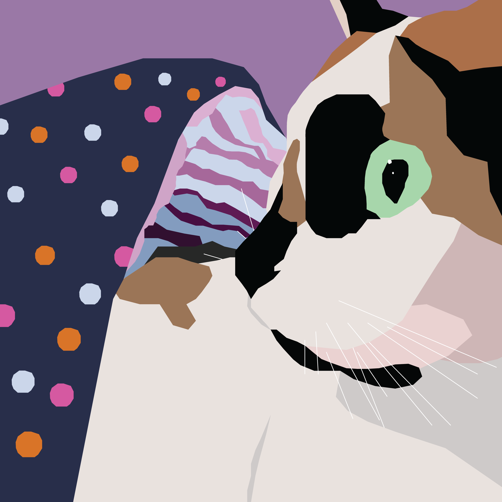
 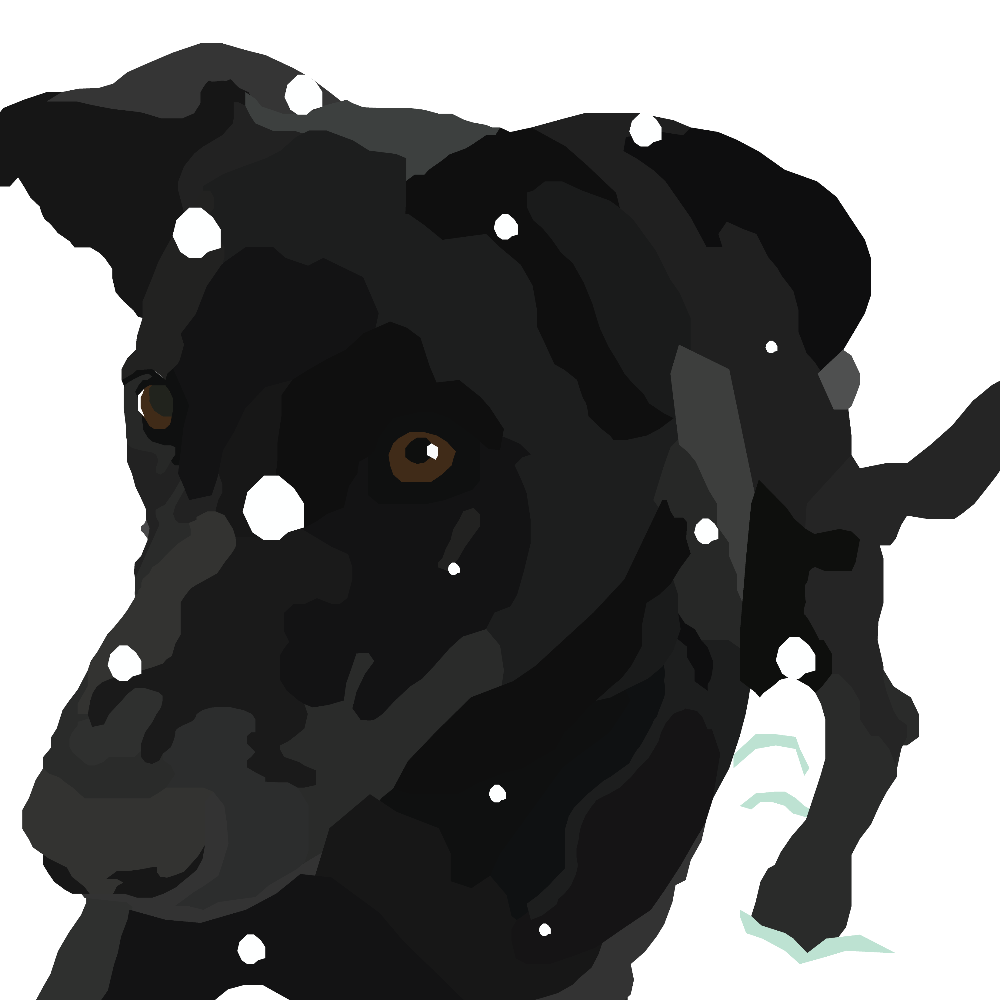
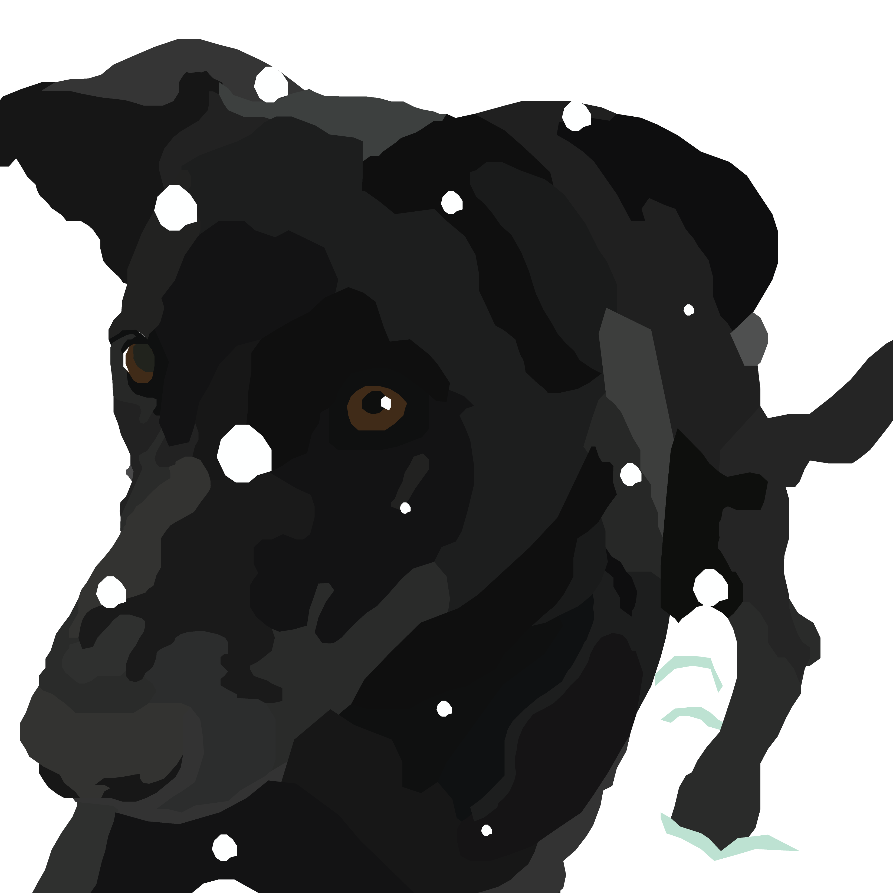
I created several illustrations for 2D Tools is a course where students explore the Adobe Creative Suite. Led by a professor, students are tasked with a new assignment each week that matches with what they learned in class. My best work from the course can be found below.
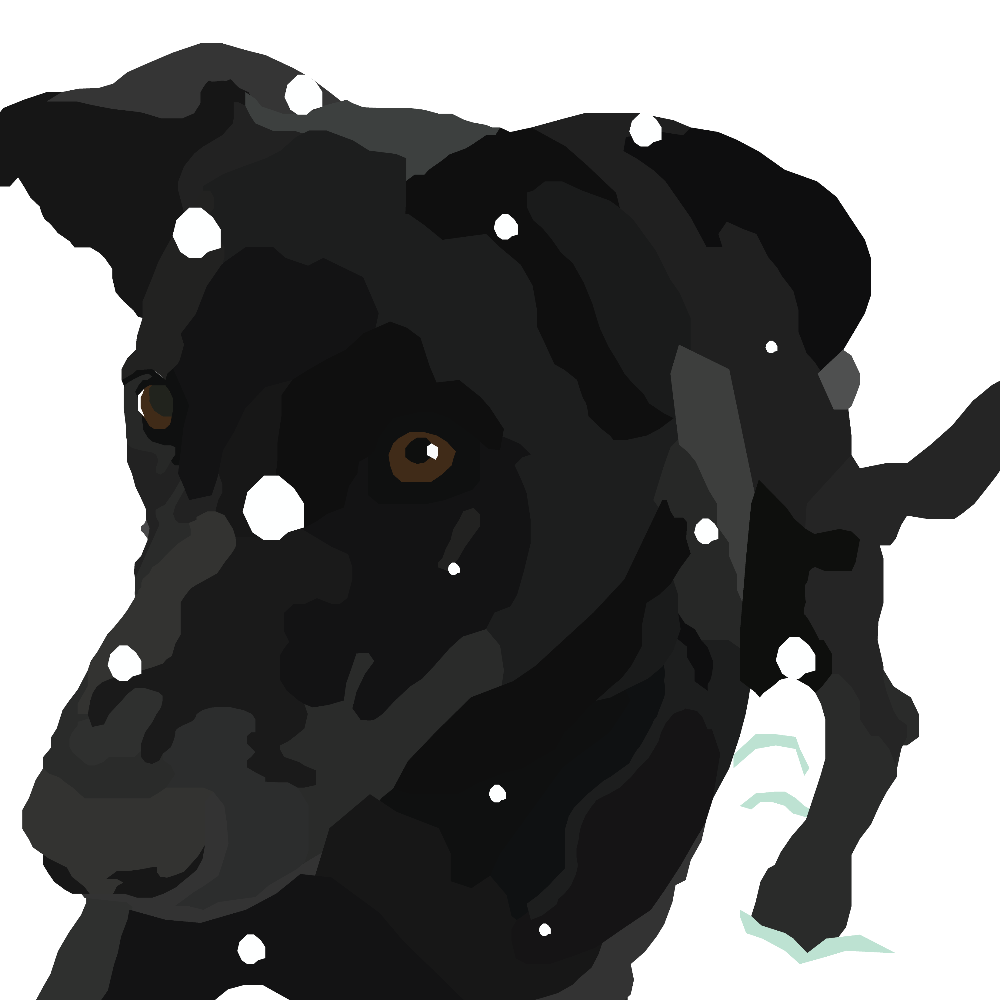
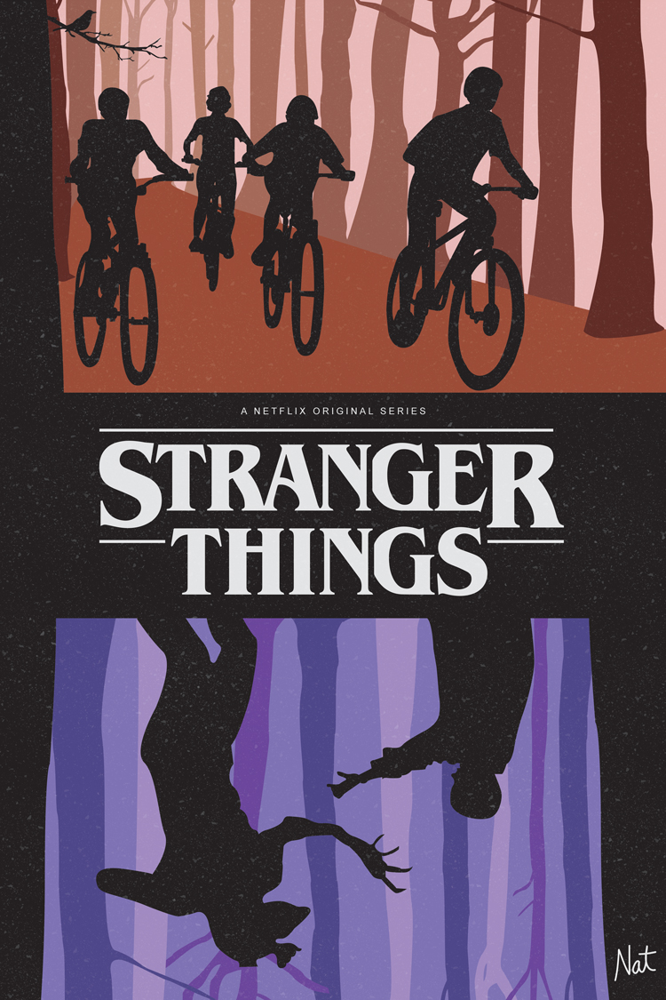
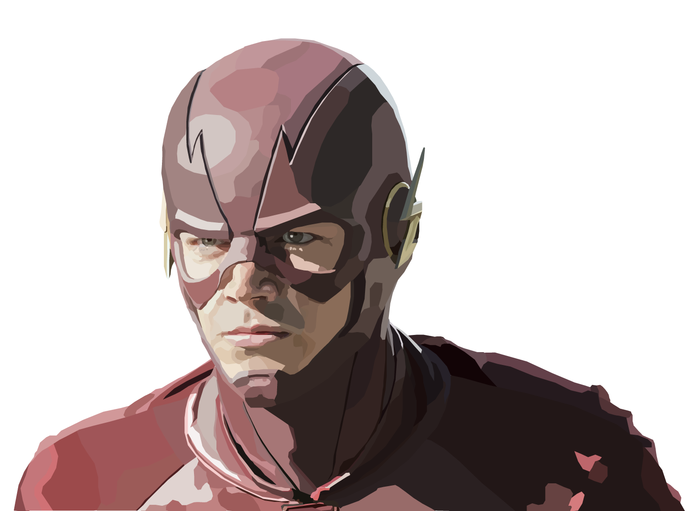
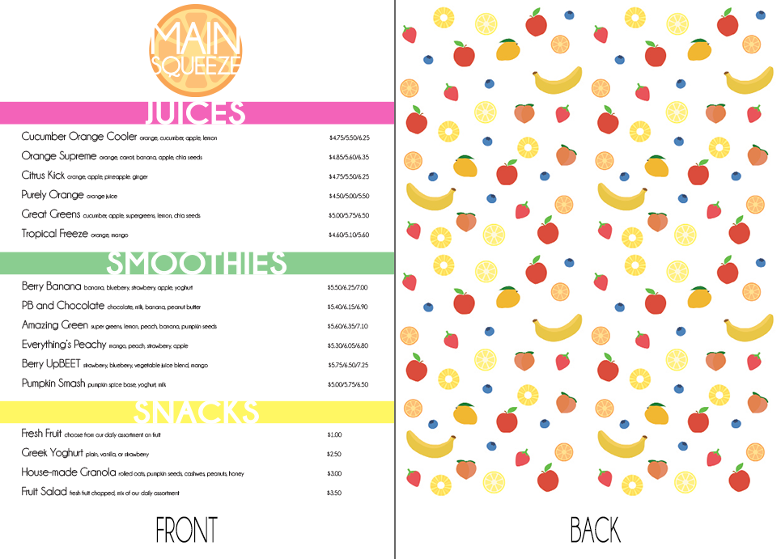
In my free time I also designed t-shirts for various contests. While I enjoy creating them, they also helped me improve my skills in illustration. The characters are owned respectively by Marvel, Nintendo, and Hal Laboratory/Nintendo.
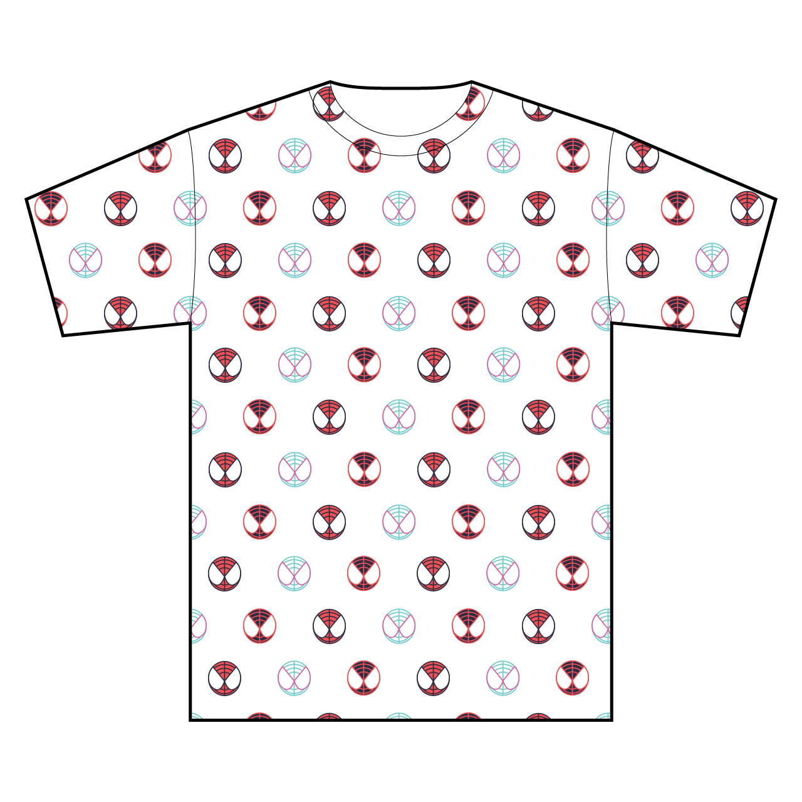
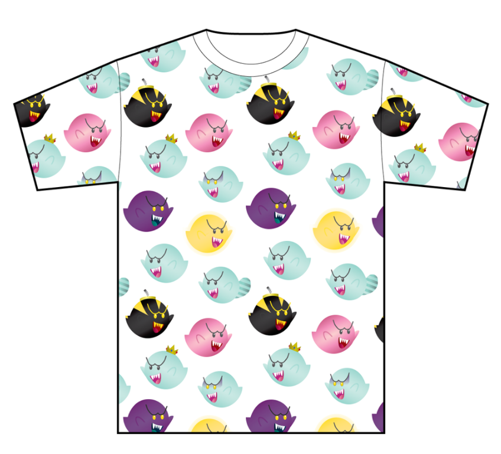
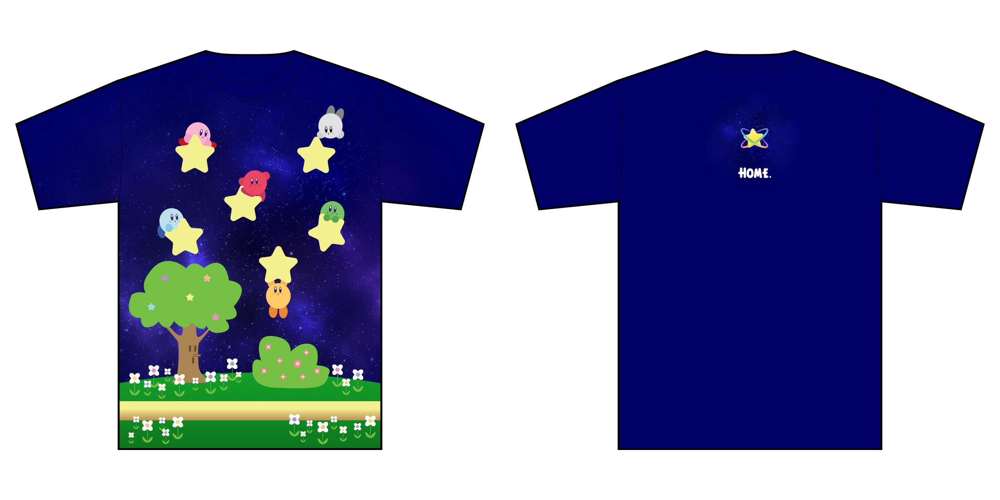
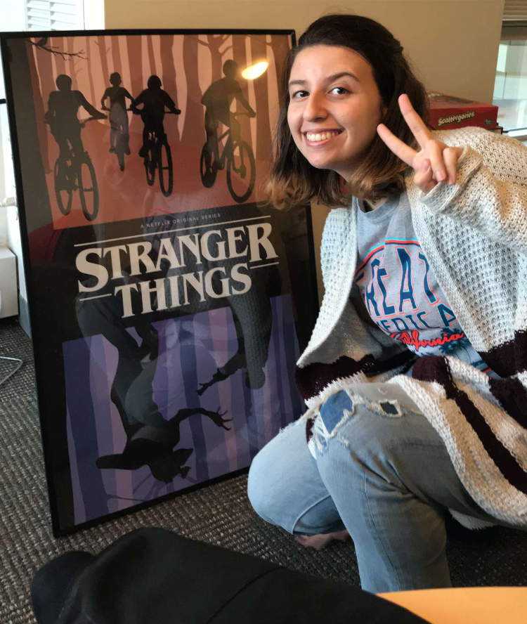
Here is a photo of me with the printed Stranger Things poster shown before while my roommate and I were hanging it!